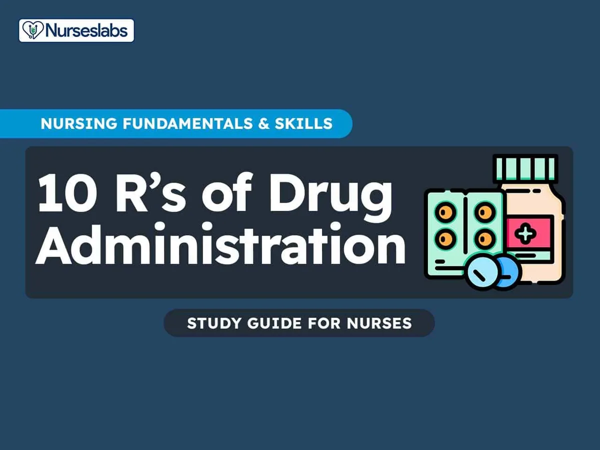

Expanded Nursing Uganda Explanation
Oxygen administration should be understood beyond a short definition. Link the concept to patient history, focused assessment, common risks, nursing priorities, documentation and evaluation of outcomes.
Contents, 28 sections (tap to expand)
01 Nursing Uganda Snapshot
Drug administration is a safety procedure, not just giving tablets or injections. The nurse protects the patient by verifying the order, patient, medicine, dose, route, time, indication, allergies, response and documentation.
02 Build The Idea
Use the medication rights as a thinking tool. Do not memorize them as a list only; apply them at the bedside.
- Before: check order, patient, allergies, indication and baseline observations.
- During: prepare correctly, explain, administer by correct route and maintain infection prevention.
- After: monitor effect, side effects, document and report errors immediately.
03 Ward Mode
If something about a prescription is unclear, pause and clarify before giving the medicine.
- Compare prescription with medicine label.
- Identify patient using approved identifiers.
- Calculate dose carefully and ask for double-check when high risk.
- Document immediately after administration.
04 Red Flags
- Anaphylaxis signs.
- Unclear or incomplete prescription.
- High-alert medication without double-check.
- Dose calculation uncertainty.
- Patient refuses medicine.
- Unexpected deterioration after a drug.
05 Patient Teaching
- Know the medicine name, purpose and timing.
- Do not share medicines.
- Report rash, swelling, breathing difficulty, severe dizziness or unusual bleeding.
- Complete courses such as antibiotics unless told otherwise.
06 Exam Answer Map
- Define drug administration.
- List medication rights.
- Explain preparation, administration and documentation.
- State adverse reaction actions.
- Add patient education.
07 Administer Prescribed Medicines Appropriately
A medicine is any chemical substance in a regulated dose intended for use in the medical diagnosis, cure, treatment, or prevention of disease or any substance that is prescribed and administered to patients to produce therapeutic effects in the body.
08 Rights Related to Medicine Administration
The rights that should be observed:
- Right patient.
- Right medicine.
- Right dosage.
- Right route.
- Right time.
- Right storage.
- Right formulation.
- Right disposal.
- Right site.
- Right equipment.
09 Routes Used in Administering Medicines
SYSTEMIC ROUTE
ENTERAL ROUTE
- Oral : Drugs taken by mouth, including tablets, capsules, liquids, and suspensions, that are absorbed through the stomach or intestinal lining.
- Sublingual : Drugs placed under the tongue that dissolve and are absorbed into the bloodstream via the tissues under the tongue, providing rapid onset of action.
- Buccal : Drugs placed between the gums and cheek, where they dissolve and are absorbed into the bloodstream through the buccal mucosa.
- Rectal : Suppositories or enemas administered into the rectum, where they are absorbed through the rectal mucosa.
- Injections :
- Intravenous (IV) : Direct injection into a vein for immediate systemic effect.
- Intramuscular (IM) : Injection into a muscle, where the drug is absorbed into the bloodstream.
- Subcutaneous (SC) : Injection into the fatty tissue under the skin.
- Intra-arterial : Injection directly into an artery, typically used in specialized medical procedures.
- Intra-articular : Injection into a joint space for local effect.
- Intrathecal : Injection into the cerebrospinal fluid in the spinal canal.
- Intradermal : Injection into the dermis layer just beneath the epidermis, often used for allergy testing and tuberculosis screening.
- Epidural : Injection into the epidural space surrounding the spinal cord, commonly used for pain relief during labor and surgery.
- Intraperitoneal : Injection into the peritoneal cavity in the abdomen, used in some chemotherapy treatments.
- Intracardiac : Injection directly into the heart muscle, often used in emergencies.
LOCAL ROUTE
- Skin topical : Application of creams, ointments, gels, or lotions to the skin for local treatment of skin conditions.
- Intranasal : Sprays or drops administered through the nasal passages for local or systemic effect.
- Ocular drops : Solutions or suspensions administered into the eyes to treat local conditions like infections or glaucoma.
- Otic drops : Solutions administered into the ear canal to treat local ear conditions such as infections.
- Intraosseous : Injection directly into the bone marrow, used in emergency situations when IV access is not available.
- Intralymphatic : Injection into the lymphatic system, used in certain cancer treatments and vaccinations.
- Intrapleural : Injection into the pleural space surrounding the lungs, used for treating pleural effusions and certain cancers.
- Inhalation : Drugs administered through the respiratory tract, typically using inhalers or nebulizers, for rapid absorption into the bloodstream via the lungs.
- Transdermal : Patches or gels applied to the skin that release the drug slowly for absorption over time.
- Mucosal :
- Throat : Lozenges, sprays, or gargles for local treatment of throat conditions.
- Vaginal : Creams, tablets, or rings inserted into the vagina for local treatment of infections or hormonal therapy.
- Rectal : Suppositories or enemas for local treatment of rectal or lower gastrointestinal conditions.
INHALATION
Inhalation is the breathing of air vapor or volatile medicine into the lungs.
Types
- Dry inhalation : Oxygen Administration: this is given when the respiratory capacity is diminished as in chest injuries, pneumonia and cardiac failure.
- Moist/steam inhalation : It is used in case of inflammation of air passages and the nasal sinuses. These are given to:
- Warm and moisten the air breathed in and relieve irritation e.g. in bronchitis, after tracheotomy and other chest conditions.
- To relieve inflammation and coughing e.g. in colds.
- To relieve congestion and oedema e.g. in sinusitis and acute laryngitis.
- Nebuliser : this produces vapors which is inhaled by the patient for example in asthma to relieve spasms of the bronchial tubes or for the relief of chest pain in angina pectoris. Other indications include Respiratory diseases eg asthma, pneumonia, Airway obstruction, Nasal congestion, Nasal bleeding, Chest injuries and Cardiac failure.
10 Forms of Medicines
Liquids :
- Solutions : Medicine dissolved in water.
- Syrups : Medicine dissolved in sugar and water.
- Mixtures : Medicine mixed with liquid but not dissolved in it.
- Milks : White medicine substances mixed with water.
- Emulsions : Medicine mixed with oil and water.
- Elixirs : Medicine dissolved in a sweetened flavored solution containing alcohol.
- Tinctures : Medicine dissolved in alcohol or alcohol and water.
- Fluidextracts : Medicine that has been boiled and evaporated to concentrate their strength and dissolve them in alcohol.
- Liniments : Medicine mixed in oil, soap, or alcohol (for external use only).
- Lotion : Mixed with water for external application.
Solids and Semisolids:
- Capsules : Medicine enclosed in gelatine containers used for liquids, powders, and oils.
- Powders : Medicine in powder form.
- Pills : Medicines molded in a round shape coated with sugar.
- Tablets : A solid dosage form of varying weight, size, and shape.
- Enteric Coated Tablets : A tablet coated with a substance that blocks absorption of the medicine until it reaches the small intestines.
- Lozenges : To be dissolved in the mouth for throat or oral treatment.
- Ointment : Medicines mixed with oil or fat.
- Pastes : Ointments with various powders added.
- Suppositories : Medicines mixed with a firm base, which can be molded for insertion into a body cavity.
- Ampoules : Sealed glass containers that contain a dose of powdered or liquid medicine.
- Vials : Rubber-stoppered glass containers that may contain a single or several doses of medicines.
Time for Administering Medication
- Four hourly : (eight times in 24 hours) 2 am., 6 a.m., 10 a.m., 2 p.m., 6pm, and 10 p.m.
- Six hourly : (four times a day) 6 a.m., 12 p.m., 6pm, and 12 midnight.
- Eight hourly : (three times a day) 6 a.m., 2 p.m., and 10 p.m.
- Twelve hourly : (twice daily) 6 a.m. and 6 p.m.
Abbreviations Used in Prescriptions
- Aa .: of each Ad lib .: as much as desired B.i.d . or b.d .: twice a day t.d.s . or t.i.d .: three times a day a.c .: before P.c .: after g .: gram Gr .: grain Gutt .: a drop Mane : in the morning Mist.: a mixture Nocte: at night q.h .: every hour o.m .: every morning o.n .: every night p.r.n .: whenever necessary q.4h : every 4 hours s.o.s .: if necessary in an emergency Stat : immediately q.i.d .: 4 times a day/every 6 hours o.d .: once a day
11 GENERAL RULES OF DRUG ADMINISTRATION
- Read the instructions carefully and incase of any doubt ask the Doctor or ward in charge.
- Never give a drug from a container or a bottle which is not clearly labeled.
- Check the label against the instructions 3 times .The 1 st time before having the container, 2nd time before the drug is drawn, 3rd time before the drug is administered to the patient.
- Give the drug following 10Rs i.e -right patient, right time, right dose, right route, right drug/medication, right formulation, right disposal, right storage, right equipment and right site.
- Once a drug is drawn from its container it shouldn’t be returned.
- Always identify the drug by reading its label on the container not by its color, smell, shape and size.
- Do not transfer drugs to another container when the old label is still on.
- Ask for clarification if any order regarding the dose is not readable.
- Watch all patients for drug reactions, especially parental drugs.
- If any drug changes its color, it should not be administered.
- Liquid preparations should always be shaken before drawing from the bottles.
- Never use a drug which has been left in an unlabeled container.
- Always measure the dose of the drug in good light.
- Observe strictly the time of administration of medication.
12 ORAL ADMINISTRATION
Requirements
Trolley
- Top Shelf: Bottles of mixtures Bottle or boxes of tablets, capsules Medicine cups Teaspoons, mortar and pestle Jug of drinking water, milk/fruit juice Glasses Medicine charts Small medication tray Scissors Kidney dish Bottom Shelf: 1 bowl of soapy water Bedside: Hand washing equipment
Procedure for Oral Administration
- Steps Action Rationale
- 1. Follow general rules of nursing procedures. Ensures accuracy and prevents errors
- 2. Observe the rules of medicine administration. Ensures accuracy and prevents errors
- 3. Arrange medication trolley in nurse’s station. To save time and reduce error in medication administration
- 4. Prepare medicine of one patient at a time, keeping medicine lists/charts together. Ensures accuracy and prevents errors
- 5. Verify the order for medication from the patient’s chart comparing with the medicine list and the label on the bottle. Ensures accuracy
- 6. Check the label on the medicine container three times (i.e. when taking it from the shelf, before pouring it into the medicine cup and before returning it to the shelf). Ensures accuracy
- 7. For tablets/capsules, pour required number from bottle into bottle cap and transfer to medication cup, for packaged tablet/capsule pour directly over the cup retain the strip. Reduces errors in medication administration
- 8. For liquid, hold medication cup to eye level and pour the prescribed amount. Ensures accuracy
- 9. For volume of less than 5ml, use a 5ml syringe without a needle to measure the amount prescribed. Ensures accuracy
- 10. Keep the label on the bottle uppermost against the palm of hand when pouring. To avoid spilling liquid in place.
- 11. Wipe the rim of the bottle before replacing the cork. Prevents cap from sticking.
- 12. Use only the dropper-supplied with liquids measured in drops. Ensures accuracy
- 13. Read the label again before replacing the container on the trolley. Third check reduces errors.
- 14. Place the measuring cup on the tray together with the drinking cup with water and then take it to the patient at the correct time. Ensures timely administration
- 15. Call the patient’s name, check the room or bed number against the medicine list before giving the medicine. Confirms the patient’s identity
- 16. Assess the patient’s condition including the level of consciousness and vital signs. For instance patients having digitalis the pulse rate should be checked before administering the medicine. To rule out likely contraindications or side effects.
- 18. Assist patient in sitting or side lying position. Prevents aspiration
- 19. Administer medicine properly, only one medicine at a time and offer a glass of water or milk. Aids swallowing.
- 20. If a patient has difficulty swallowing, grind the tablets in a mortar with pestle, crush it to fine powder and mix it with a small amount of water. To ease swallowing.
- 21. Prepare powdered medication at the bedside and give it to the patient. Increases compliance.
- 23. If the patient is unable to hold medication in hand; assist to place the cup to the lip and slowly transfer medicine into the mouth using a spoon. To support the patient.
- 24. If medicines fall on the floor, discard and replace them. To avoid contaminated medicine
- 25. Stay with the patient until the medicine has been swallowed; if the patient is confused or disoriented his/her mouth should be checked to confirm that the patient has swallowed the medicine. If the medicine is vomited within 5 minutes report to the In-charge or Doctor. Medicines must never be left on the bedside table. Ensures that patient receives prescribed medication at the correct time
- 26. Assist the patient to a comfortable position. Maintains patient’s comfort
- 27. Dispose of soiled supplies, clean work area and wash hands. Reduces transmission of infection
- 28. Document the administration of the medication with date, time and signature immediately after administration. To avoid errors and promote proper accountability.
- 29 Reassess the patient’s response to the medicine within one hour after giving it and any ill effects reported. To detect therapeutic/ side effects or adverse effects.
- 30 The medicine cups are washed and returned to their proper place. Promote hygiene.
13 INHALATION
Inhalation is the breathing of air vapor or volatile medicine into the lungs.
Types
- Dry inhalation : Oxygen Administration: this is given when the respiratory capacity is diminished as in chest injuries, pneumonia and cardiac failure.
- Moist/steam inhalation : It is used in case of inflammation of air passages and the nasal sinuses. These are given to:
- Warm and moisten the air breathed in and relieve irritation e.g. in bronchitis, after tracheotomy and other chest conditions.
- To relieve inflammation and coughing e.g. in colds.
- To relieve congestion and oedema e.g. in sinusitis and acute laryngitis.
- Nebuliser : this produces vapors which is inhaled by the patient for example in asthma to relieve spasms of the bronchial tubes or for the relief of chest pain in angina pectoris. Other indications include Respiratory diseases eg asthma, pneumonia, Airway obstruction, Nasal congestion, Nasal bleeding, Chest injuries and Cardiac failure.
14 DRY INHALATION (Oxygen administration)
It is given when the respiratory tract is diminished as in chest injuries, cardiac failure and pneumonia.
REQUIREMENTS FOR OXYGEN ADMINISTRATION
Clean tray
- Rubber tubing.
- BLB oxygen mask.
- Flowmeter.
- Nasal catheter.
- Gallipot with gauze pads.
- Humidifier with distilled water
Bedside
- Oxygen source.
- Screen
PROCEDURE
- Steps Action Rationale
- 1 Refer to the general rules Keeps standard
- 2 Turn and test the oxygen cylinder before bringing everything to the bedside Conserves time and energy
- 3 Determine need for oxygen therapy in patient and check physician’s order for rate, device used, concentration Reduces risk of error in administration
- 4 Position patient in sitting up or one side Promotes comfort
- 5 For nasal cannula use; connect nasal cannulae to oxygen set up with humidification, check if oxygen is flowing out of prongs Humidification prevents dehydration of mucous membranes
- 6 Place prongs in the patient’s nostrils 2 inches, place tubing over and behind each ear with adjuster comfortably under the chin or place tubing around the patient’s head with the adjuster at the back or base of the head and place gauze pads at ear beneath the tubing as necessary Facilitates oxygen administration and patient comfort. Pads reduce irritation and pressure
- 7 Encourage patient to breathe through the nose, with the mouth closed Nose breathing provides for optimal delivery of oxygen to the patient
- 8 For B.L.B mask use; attach face mask to oxygen source start the flow of oxygen at the specified rate, for a mask with a reservoir allow oxygen to fill the bag before proceeding to the next step The bag is the oxygen supplier to the patient
- 9 Position the face mask over the patient’s nose and mouth, adjust the elastic strap around patient’s head, adjust the flow rate A loose or poorly fitting mask will result in oxygen loss
- 10 Apply padding behind ears as well as scalp where elastic band passes Padding prevents skin irritation
- 11 Reassess patient’s respiratory status, including respiratory rate, effort, and lung sounds Assesses effectiveness of oxygen therapy
- 12 Document relevant information in the patient’s record Ensures accurate medical records
Parts of an Oxygen Flowmeter
15 PARENTERAL ROUTE (INJECTION)
Requirements
Trolley
- Top shelf Bottom shelf
- Small Tray. Sterile syringes and needles of all capacities and appropriate size. Prescribed sterile medications in ampoules or vials. Patient’s charts and medicine lists. Gallipot with swabs. Antiseptic solution in a gallipot. Ampoule file Sterile water for injection Injection dishes Tourniquet. Cannula of appropriate gauge. Strapping Pair of scissors. Clean gloves Sharps Safety Box. Receiver for used swabs. Receiver for used gloves. Small pillow for supporting the arm. Macintosh and towel
- Bedside
- Screen. Handwashing equipment.
Procedure ****
16 A. Intradermal or Intracutaneous Injection
- Steps Action Rationale
- 1. Refer to general and medicine administration rules for injections.
- 2. A tuberculin syringe or 1 ml syringe is used and needles.
- 4. Clean the skin with an antiseptic swab and allow the site to dry. Exposes the selected site.
- 5. If it is a BCG vaccination, clean the site with water.
- 6. Stretch the patient’s skin, draw it tight and introduce the needle at an angle parallel to the skin.
- 7. Gently and slowly inject the medicine while observing for a small wheal to appear.
- 8. Carefully withdraw the needle.
- 9. Do not massage the site after removing the needle. This may alter the test results.
- 10. Circle the area with a pen and record time, and request the patient not to wash the area until it is assessed for the intended outcome. If it was for diagnostic purposes e.g., Mantoux test.
- 11. Inspect for signs of reaction when the stated duration of time has reached.
- 12. Report and record results.
- 13. Clean away the used equipment.
17 B. Subcutaneous Injection or Hypodermic
- Steps Action Rationale
- 14. Help patient assume position depending on site selected. Ensures free access to site.
- 15. Choose a suitable needle gauge; take a 1 ml or 2 ml syringe depending on the dosage.
- 16. Draw the medicine into the syringe.
- 17. Expel the air by holding the syringe with the needle pointing up.
- 18. Place the syringe in the injection dish.
- 20. Select the site and clean it with an antiseptic swab and let the area dry first.
- 21. Grasp and pinch or squeeze the patient’s skin gently between the finger and thumb of your left hand and insert the needle at an angle of 45°. Provides for easy and less painful entry into subcutaneous tissue.
- 22. Pull back the (piston) plunger and inject the medicine slowly. Determines if the needle is in a blood vessel.
- 23. When the medicine has been injected completely, place a swab over the needle and withdraw the needle quickly and smoothly. Reduces discomfort.
- 24. If there is any bleeding at the site, apply firm gentle pressure with a swab until it stops.
- 25. Make the patient comfortable and record the medicine given on the patient’s treatment sheet.
- 26. Discard syringe, gloves, and swabs appropriately and clear away the equipment. Promotes infection control measures.
18 C. Intramuscular Injection
- Steps Action Rationale
- 27. Observe the general nursing rules.
- 28. Read the prescription carefully and check the medicine with the other nurse, including the amount to be given.
- 29. Assemble syringe and needle, put on gloves.
- 30. Break open the top of the ampoule (by using a gauze swab or a file) or remove the top of the rubber cap.
- 31. Reconstitute powdered medicines according to the instructions on the bottle.
- 32. Put on gloves and draw up the prescribed dose of the medicine.
- 33. Expel the air and remember that with antibiotics and multi-dose vials, the air is expelled into the container.
- 34. Position the patient depending on the site chosen. Proper positioning ensures muscle relaxation of the patient.
- 35. Select, locate, clean the site and allow it to dry.
- 36. Inject the medication; grasp and pinch the area surrounding the injection site or spread skin at site as appropriate. Aids needle penetration in patients with thick muscles.
- 37. Hold the syringe between thumb and forefinger and pierce skin at a 90° angle and insert the needle.
- 38. Aspirate by holding the barrel steady with a non-dominant hand. Helps to check if a needle is in a blood vessel.
- 39. If the blood does not appear in the syringe, inject the medication slowly and steadily. Helps to disperse medication into muscle tissue, thus decreasing a patient’s discomfort.
- 40 Withdraw the needle slowly and steadily while supporting at the hub of the syringe and needle. With non-dominant hand support the skin surface using cotton swab for applying counter traction at the site Helps to reduce discomfort and prevent pulling of tissues when needle is withdrawn
- 41 Apply gentle pressure at the site with a dry cotton swab but do not massage. Massaging irritates tissues at the injection site.
- 42 Discard the un capped needle and syringe appropriately. Promotes infection prevention and control.
- 43 Clear away, remove gloves and wash hands.
- 44 Record procedure including the name of medication, dose, site and response of the patient. Reduces chances of medication errors
19 D. Intravenous Injection
- Steps Action Rationale
- 45. Prepare the injection tray and take it to the patient’s bedside. Ensures all necessary items are available for the procedure.
- 47. Screen the bed and put on gloves. Provides privacy.
- 48. Place a small pillow and a protective sheet under the patient’s arm. Promotes comfort and protects the beddings.
- 49. Expose the patient’s forearm and anterior surface of the elbow. Ensures easy access to the injection site.
- 50. Inspect the selected vein, if it is visible and clear; apply a tourniquet or a sphygmomanometer cuff around the patient’s upper arm and inflate sufficiently about 8 to 10 cm above the site. Helps to distend and enlarge the vein.
- 51. Request the patient to close and open the fist for a minute. Promotes venous filling and visibility.
- 52. Clean the area with an antiseptic and dry with a sterile swab. Reduces microorganisms.
- 53. Expel air from the syringe. Ensures accurate dosing and prevents air embolism.
- 54. Hold the patient’s arm and with your left thumb exert pressure about 3 cm below the chosen site and make the skin tight. Stabilizes the vein and reduces movement.
- 55. Insert the needle at an angle of 15-45 degrees with its bevel up then quickly and steadily insert into the vein. Pull back the piston slightly if blood is aspirated. Ensures that the needle is in the vein.
- 56. Remove the tourniquet or deflate the cuff and inject the medicine slowly. Prevents excessive pressure in the vein and ensures proper delivery of medication.
- 57. When the medicine is injected, put a swab over the site and withdraw the needle. Minimizes bleeding and ensures cleanliness.
- 58. Apply pressure at the site with a swab for some seconds to make sure there is no bleeding. If oozing continues, apply a swab and a piece of strapping. Prevents bleeding.
- 59. Record the medicine in the patient’s chart and clear away. Ensures accurate medical records and maintains order.
SOME OF THE RECOMMENDED VEINS FOR INTRAVENOUS INFUSION
- BACK OF THE HAND FOREARM LOWER EXTREMITY
- Dorsal metacarpal veins Basilic vein Cephalic vein Femoral and saphenous vein in the thigh Dorsal venous plexus, medial and lateral marginal veins in the foot
20 COMPLICATIONS OF INTRAVENOUS INJECTIONS
- Incorrect IV Site Placement : Inserting the IV into the wrong vessel (e.g., artery instead of vein) can lead to severe consequences.
- Medication Errors : Misidentification of medications, incorrect dosages, or incompatible mixing can result in serious adverse reactions.
- Rapid Administration and Undesired Effects : Delivering medications too quickly can lead to undesirable effects like hypotension, cardiac arrhythmias, allergic reactions, and fluid overload.
- Thrombophlebitis : Inflammation of a vein, often with a blood clot, can occur due to frequent IV injections, improper technique, or certain medications.
- Circulatory Overload : Infusing too much fluid too quickly can overwhelm the circulatory system, leading to fluid buildup and strain on the heart and lungs.
- Embolism : A blood clot, air bubble, or foreign matter blocking a blood vessel can occur due to thrombophlebitis, improper IV line placement, or air entering the line.
- Shock : Severe allergic reactions, blood loss, or sepsis can lead to a life-threatening decrease in blood flow to vital organs.
- Infiltration/Extravasation : When IV fluids leak out of the vein into the surrounding tissues, it can cause pain, swelling, and tissue damage.
- Phlebitis : Inflammation of a vein without a clot, often caused by irritation from the IV catheter or medication.
- Air Embolism : Air entering the bloodstream through the IV line can travel to the heart or lungs, causing blockage and potentially leading to respiratory distress or cardiac arrest.
- Catheter-Related Bloodstream Infection (CRBSI) : A serious complication where bacteria enter the bloodstream through the IV catheter, leading to fever, chills, and potentially sepsis.
- Nerve Damage : Incorrect placement of the IV catheter can damage nerves in the area, resulting in pain, numbness, or weakness.
- Hematoma : Bleeding into the surrounding tissues from the IV puncture site, appearing as a bruise.
- Phlebosclerosis : Hardening of the vein due to repeated IV punctures or irritation from the catheter.
Common Sites for Intramuscular Injections
- Gluteal Muscle: The outer upper quadrant of the buttock is the safest site, as it avoids the sciatic nerve.
- Thigh Muscles : The upper outer third of the thigh muscles.
- Deltoid Muscle : Used for small injections (up to 2 ml) if the patient has enough muscle mass, but this site should be avoided whenever possible.
21 COMPLICATIONS OF INTRAMUSCULAR INJECTIONS
1. Abscess Formation : This occurs when unsterile needles and syringes are used, or when oily substances are not injected deep enough. The injection site becomes inflamed and filled with pus.
- Prevention : Strict adherence to aseptic technique, proper needle selection, and injecting oily substances deep into the muscle tissue are crucial.
2. Nerve Injury: Incorrectly positioning the needle can damage nearby nerves, causing pain, numbness, weakness, or paralysis.
- Prevention : Thorough anatomical knowledge, correct landmark identification, and careful needle insertion are essential.
3. Tissue Damage/Necrosis : Injecting too much medication, using irritating substances, or repeated injections in the same site can lead to tissue damage and cell death.
- Prevention : Administering the correct dosage, choosing less irritating medications, and rotating injection sites regularly can minimize this risk.
4. Hematoma : A hematoma forms when blood leaks into the surrounding tissue after the injection, causing a bruise or swelling.
- Prevention : Applying pressure to the injection site after the injection can help prevent hematoma formation.
5. Pain and Discomfort : Intramuscular injections can be painful, especially if the medication is irritating or the injection technique is not correct.
- Prevention : Using proper injection technique, choosing a suitable needle size, and warming the medication to room temperature can reduce pain.
6. Allergic Reactions : Some individuals may have an allergic reaction to the medication or the ingredients in the solution.
- Prevention : Thorough patient history, allergy testing, and careful observation for signs of allergic reactions are crucial.
7. Injection into a Blood Vessel : The needle may unintentionally enter a blood vessel, leading to potential complications like drug overdose or embolism.
- Prevention : Aspirating (drawing back on the plunger) before injecting helps to ensure the needle is not in a blood vessel.
8. Delayed-Onset Muscle Soreness : Some medications can cause muscle soreness or stiffness that may not appear until several hours or days after the injection.
- Prevention : No specific prevention, but staying hydrated and avoiding strenuous activity after the injection may help.
9. Infection : Improper sterile technique can lead to infection at the injection site.
- Prevention : Strict adherence to aseptic technique is essential.
10. Air Embolism : Although rare, air can be injected into the bloodstream, leading to complications like respiratory distress or cardiac arrest.
- Prevention : Using proper technique to ensure no air is introduced into the syringe or needle.
Intravenous infusion equipment and the superficial veins of the forearm that may be cannulated
22 Formula for Calculating the Drop Rate
To calculate the drop rate, use the following formula:
Example:
The doctor has prescribed 1000 mls of 5% dextrose infusion to run in 10 hours. How many drops per minute will you regulate if the infusion set has a drop factor of 20?
23 Factors that May Affect the Flow Rate
- Height of the Infusion Bottle : Raising the infusion bottle higher will increase the rate of flow, and lowering it will decrease the rate.
- Patency of Infusion Set and Needle : A blood clot in the needle may stop the infusion. This may occur when there is a delay in changing the emptied infusion bottle.
- Kinking of the Tubing or Faulty Position of the Needle : When the needle is against or away from the vein wall, it may affect the flow.
- Tight Splint: A tight splint on or above the infusion needle will restrict the flow rate.
- Blocked Air Vent: A blocked air vent will cause the infusion to stop running.
24 Care of the Patient While on Intravenous Infusion
- Accurate Record Keeping : Keep an accurate record, including the time of starting the infusion, type of fluid, amount, and the prescribed rate of flow.
- Frequent Assessment : Assess the patient at frequent intervals for signs of abnormal reactions such as pain, sweating, restlessness, or change of color.
- Regular Site Inspection : Inspect the site at regular intervals for signs of infiltration.
- Condition Monitoring : Take and record the patient’s condition regularly.
- Daily Cleansing : If the infusion is running for some days, cleanse the area around the injection site with sterile gauze daily.
INSTILLING MEDICATION INTO EAR
INSTILLING MEDICATION INTO THE EYES
ADMINISTERING MEDICATION THROUGH NASO-GASTRIC TUBE
APPLYING TOPICAL MEDICATIONS
ADMINISTERING RECTAL AND VAGINAL MEDICATION.
BLOOD TRANSFUSION
Click Here
25 Nursing Uganda Clinical Lens
Use Oxygen Administration as a practical nursing topic, not only a memorized definition. Turn the topic into practical nursing knowledge: meaning, assessment, care priorities, teaching and evaluation.
- What to understand first: define oxygen administration, identify the normal or expected pattern, then explain what changes when the patient is unwell.
- Why it matters in care: the nurse must recognize risk early, explain findings clearly, document accurately and know when to escalate.
- How to revise it: connect each point to assessment, nursing diagnosis or care problem, intervention, rationale and evaluation.
26 Assessment Guide
- Key definitions, patient history, focused observations and risk factors.
- Findings that are normal, abnormal or urgent.
- Resources, referral needs and documentation requirements.
27 Nursing Priorities, Rationales and Outcomes
- Protect safety, comfort, dignity and infection prevention.
- Provide clear care, education and escalation when needed.
- Evaluate response and record what changed.
The rationale for these priorities is patient safety: nursing actions should prevent deterioration, reduce discomfort, support recovery and create clear evidence for the next caregiver.
- Expected outcome: The topic is understood in a way that supports safe nursing judgement and revision.
28 Patient Teaching and Revision Check
- Explain oxygen administration in simple language the patient or caregiver can repeat back.
- Teach warning signs, medicine or follow-up instructions, hygiene or lifestyle points where relevant.
- For exams, prepare a short answer using: definition, causes or risk factors, signs, assessment, management, complications and prevention.
- For ward practice, document baseline findings, actions taken, patient response and the plan for review.
Illustrations and Diagrams (1)

Related Video Lectures
Watch nursing lecture videos on YouTube for this topic. Opens in a new tab.
Watch on YouTubeExternal link: YouTube may use its own cookies and terms. Nursing Uganda is not affiliated with YouTube.